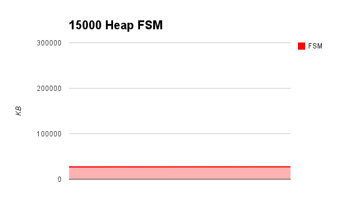
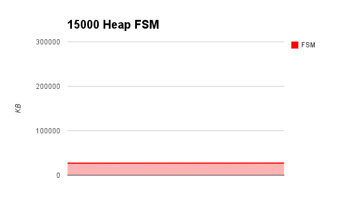
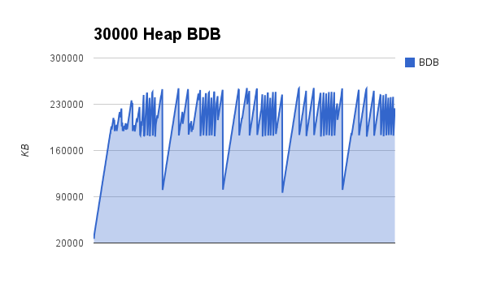
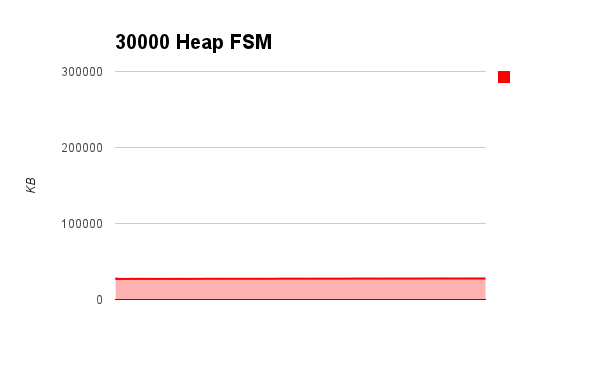
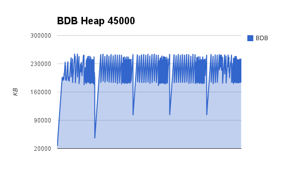
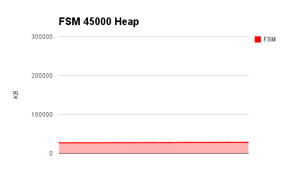
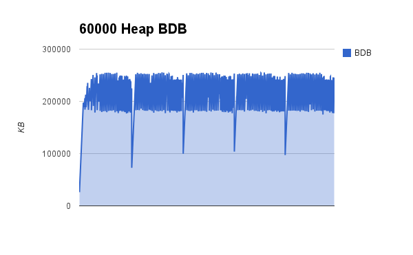
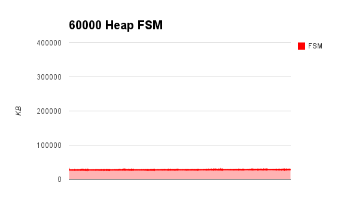
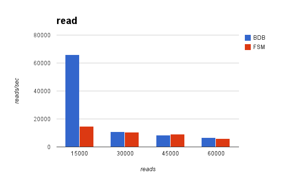
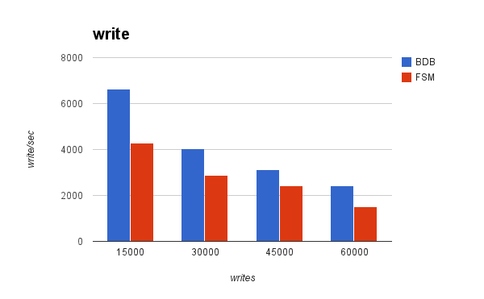

Summary
FileStoredMap is an implementation of java.util.Map. The entries(key-value) are persisted in files instead of Java heap avoiding the Out Of Memory Error.
Serialization
This map serializes a key-value pair to BSON(http://bsonspec.org/) and writes to a file when called 'put'. And deserializes BSON to a key-value when called 'get'.
For example, below:
@Test
public void testPutPojo() throws IOException {
TestUtils.deleteFiles("tmp/empdir");
FileStoredMap<Employee> map = null;
try {
map = new FileStoredMap<Employee>("tmp/empdir");
Employee emp = TestUtils.createEmployee("hoge", 256, new Date());
// 'emp' is serialized to bson by FileStoredMap and written to data file.
map.put("emp", emp);
// check the equivalent between local variable object and deserialized one.
TestUtils.assertEmployeeEquivalent(emp, map.get("emp"));
} finally {
if (map != null) {
map.close();
}
}
}
Less Heap
FileStoredMap(FSM) requires a less heap than HashMap and Embeded DB(Berkeley DB, etc.) since storing data to files instead of heap. For example, comparing memory usage to Berkeley DB Java Edition(BDB).
Benchmark Code
Benchmark code is here.
JVM Options
Write It Later.
reads/writes 15000
 

reads/writes 30000
 reads/writes 45000
 reads/writes 60000
 Reads/Writes is Slow
FSM writes is 2-3 times slower than BDB.
 Maven Repository
- Jars: http://wrap-trap.net/maven2/snapshot/net/wrap-trap/collections/FileStoredMap/0.0.1-SNAPSHOT/
- Repository URL: http://wrap-trap.net/maven2/snapshot/
pom.xml:
<dependencies>
<dependency>
<groupId>net.wrap-trap.collections</groupId>
<artifactId>FileStoredMap</artifactId>
<version>0.0.1-SNAPSHOT</version>
</dependency>
...
</dependencies>
...
<repositories>
<repository>
<id>wrap-trap.net/maven2/snapshot</id>
<name>wrap-trap.net Maven Repository</name>
<url>http://wrap-trap.net/maven2/snapshot</url>
</repository>
...
<repositories>